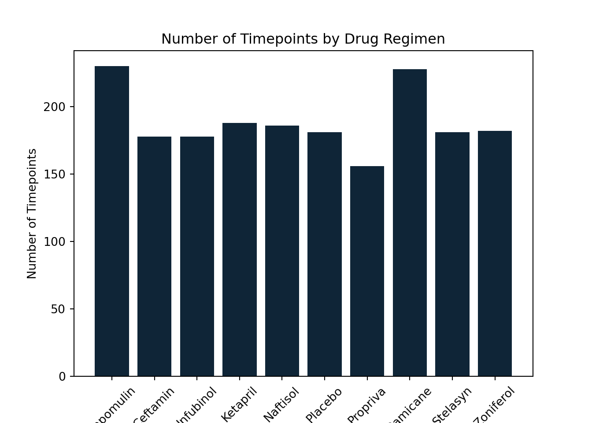
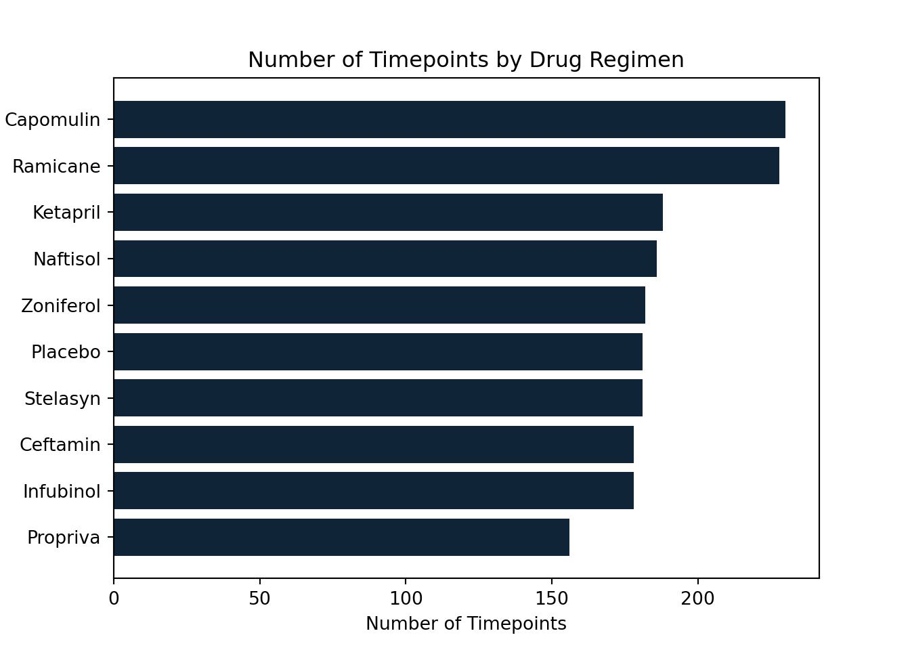
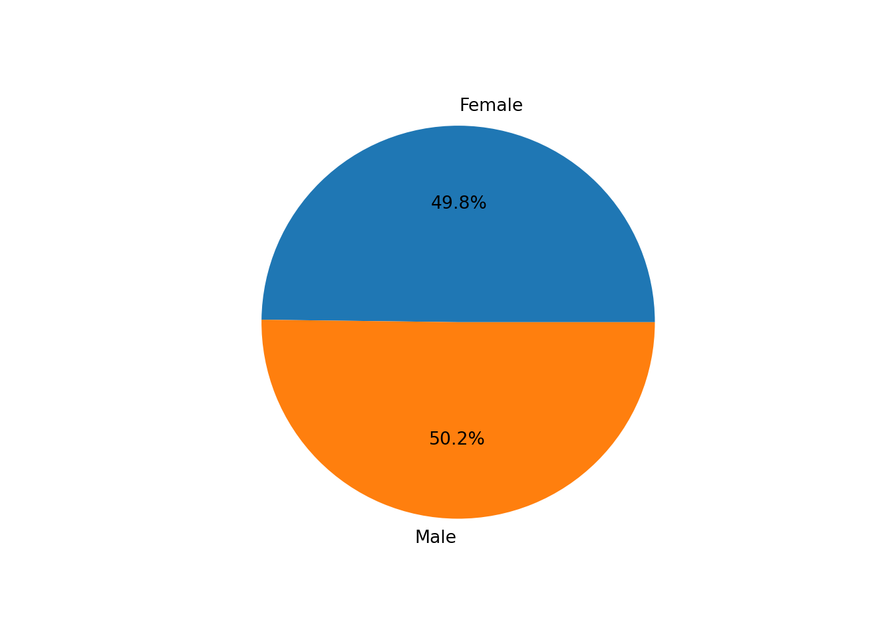
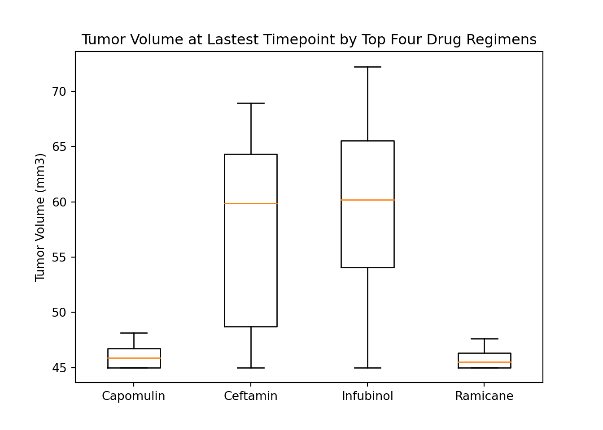
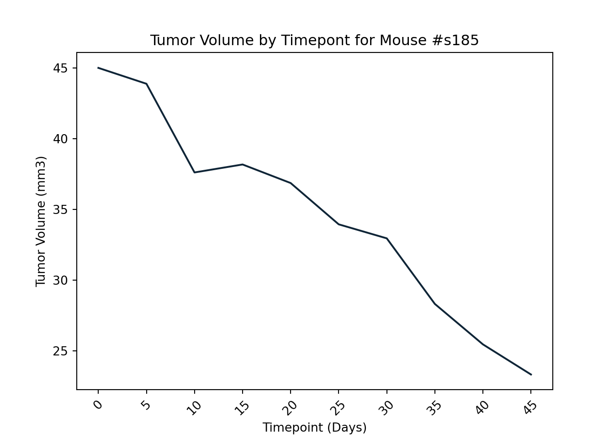
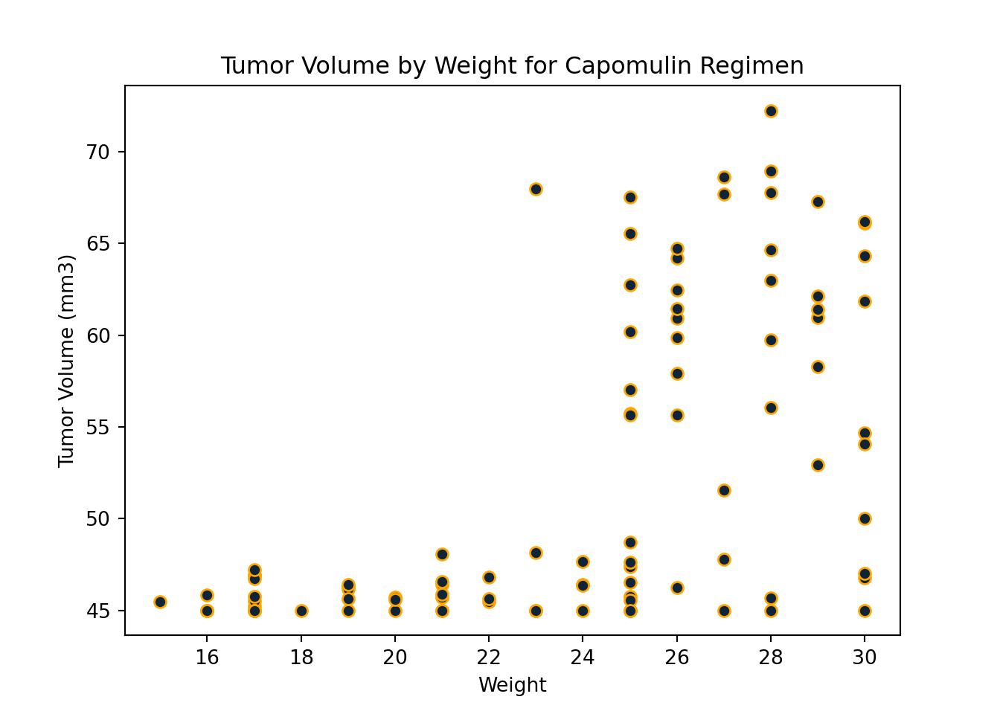
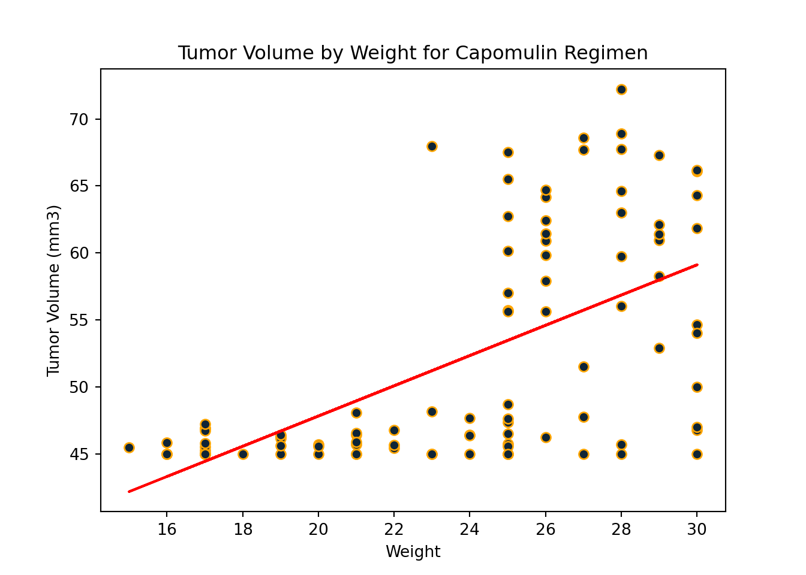

pymaceuticals
249Generate Summary Statistics
| Mean Med | ian Va | riance | Standard Dev | iation Standard Err | or Number of Ti | mepoints |
|---|---|---|---|---|---|---|
| Capomulin | 40.6757 | 41.5578 | 24.9478 | 4.99477 | 0.329346 | 230 |
| Ceftamin | 52.5912 | 51.7762 | 39.2902 | 6.26819 | 0.469821 | 178 |
| Infubinol | 52.8848 | 51.8206 | 43.1287 | 6.56724 | 0.492236 | 178 |
| Ketapril | 55.2356 | 53.6987 | 68.5536 | 8.27971 | 0.60386 | 188 |
| Naftisol | 54.3316 | 52.5093 | 66.1735 | 8.13471 | 0.596466 | 186 |
| Placebo | 54.0336 | 52.2889 | 61.1681 | 7.821 | 0.581331 | 181 |
| Propriva | 52.3935 | 50.91 | 43.1388 | 6.56801 | 0.525862 | 156 |
| Ramicane | 40.2167 | 40.6732 | 23.4867 | 4.84631 | 0.320955 | 228 |
| Stelasyn | 54.2331 | 52.4317 | 59.4506 | 7.71042 | 0.573111 | 181 |
| Zoniferol | 53.2365 | 51.8185 | 48.5334 | 6.96659 | 0.516398 | 182 |
Create Bar Charts and Pie Charts
Bar Charts
<BarContainer object of 10 artists>([<matplotlib.axis.XTick object at 0x00000255DC4C4FD0>, <matplotlib.axis.XTick object at 0x00000255DC4C4FA0>, <matplotlib.axis.XTick object at 0x00000255DC4C4640>, <matplotlib.axis.XTick object at 0x00000255DE61DE20>, <matplotlib.axis.XTick object at 0x00000255DE6355E0>, <matplotlib.axis.XTick object at 0x00000255DE635B80>, <matplotlib.axis.XTick object at 0x00000255DE63C040>, <matplotlib.axis.XTick object at 0x00000255DE63C670>, <matplotlib.axis.XTick object at 0x00000255DE63CDC0>, <matplotlib.axis.XTick object at 0x00000255DE643550>], [Text(0, 0, 'Capomulin'), Text(1, 0, 'Ceftamin'), Text(2, 0, 'Infubinol'), Text(3, 0, 'Ketapril'), Text(4, 0, 'Naftisol'), Text(5, 0, 'Placebo'), Text(6, 0, 'Propriva'), Text(7, 0, 'Ramicane'), Text(8, 0, 'Stelasyn'), Text(9, 0, 'Zoniferol')])
<BarContainer object of 10 artists>
Pie Charts
([<matplotlib.patches.Wedge object at 0x00000255DE7F5490>, <matplotlib.patches.Wedge object at 0x00000255DE7F5BB0>], [Text(0.006939175976765795, 1.0999781124353174, 'Female'), Text(-0.006939175976765929, -1.0999781124353174, 'Male')], [Text(0.0037850050782358875, 0.5999880613283548, '49.8%'), Text(-0.003785005078235961, -0.5999880613283548, '50.2%')])
Calculate Quartiles, Find Outliers, and Create a Box Plot
Calculate Quartiles
| Q1 Q2 | Q3 | iq | r lowe | r_bound | upper_bound | |
|---|---|---|---|---|---|---|
| Capomulin | 45 | 45.8937 | 46.749 | 1.74901 | 42.3765 | 49.3725 |
| Ceftamin | 48.7221 | 59.852 | 64.2998 | 15.5778 | 25.3554 | 87.6665 |
| Infubinol | 54.0486 | 60.1652 | 65.5257 | 11.4771 | 36.8329 | 82.7414 |
| Ramicane | 45 | 45.5219 | 46.3438 | 1.34383 | 42.9843 | 48.3596 |
Find Outliers
Outliers for Tumor Size
Boxplot for Tumor Size
{'whiskers': [<matplotlib.lines.Line2D object at 0x00000255DE99D250>, <matplotlib.lines.Line2D object at 0x00000255DE99D520>, <matplotlib.lines.Line2D object at 0x00000255DE99F550>, <matplotlib.lines.Line2D object at 0x00000255DE99F820>, <matplotlib.lines.Line2D object at 0x00000255DE9B7940>, <matplotlib.lines.Line2D object at 0x00000255DE9B7C10>, <matplotlib.lines.Line2D object at 0x00000255DE9C6D30>, <matplotlib.lines.Line2D object at 0x00000255DE9D3040>], 'caps': [<matplotlib.lines.Line2D object at 0x00000255DE99D790>, <matplotlib.lines.Line2D object at 0x00000255DE99D9A0>, <matplotlib.lines.Line2D object at 0x00000255DE99FAF0>, <matplotlib.lines.Line2D object at 0x00000255DE99FDC0>, <matplotlib.lines.Line2D object at 0x00000255DE9B7EE0>, <matplotlib.lines.Line2D object at 0x00000255DE9C61F0>, <matplotlib.lines.Line2D object at 0x00000255DE9D3310>, <matplotlib.lines.Line2D object at 0x00000255DE9D35E0>], 'boxes': [<matplotlib.lines.Line2D object at 0x00000255DE800F40>, <matplotlib.lines.Line2D object at 0x00000255DE99F280>, <matplotlib.lines.Line2D object at 0x00000255DE9B7670>, <matplotlib.lines.Line2D object at 0x00000255DE9C6A60>], 'medians': [<matplotlib.lines.Line2D object at 0x00000255DE99DC70>, <matplotlib.lines.Line2D object at 0x00000255DE9B70D0>, <matplotlib.lines.Line2D object at 0x00000255DE9C64C0>, <matplotlib.lines.Line2D object at 0x00000255DE9D38B0>], 'fliers': [<matplotlib.lines.Line2D object at 0x00000255DE99DF40>, <matplotlib.lines.Line2D object at 0x00000255DE9B73A0>, <matplotlib.lines.Line2D object at 0x00000255DE9C6790>, <matplotlib.lines.Line2D object at 0x00000255DE9D3B80>], 'means': []}([<matplotlib.axis.XTick object at 0x00000255DE63D370>, <matplotlib.axis.XTick object at 0x00000255DE63D3A0>, <matplotlib.axis.XTick object at 0x00000255DE9D3FA0>, <matplotlib.axis.XTick object at 0x00000255DE9DD1F0>], [Text(1, 0, 'Capomulin'), Text(2, 0, 'Ceftamin'), Text(3, 0, 'Infubinol'), Text(4, 0, 'Ramicane')])
No outliers detected.
Create a Line Plot and a Scatter Plot
Line Plot
([<matplotlib.axis.XTick object at 0x00000255DE821DF0>, <matplotlib.axis.XTick object at 0x00000255DE821E50>, <matplotlib.axis.XTick object at 0x00000255D7523550>, <matplotlib.axis.XTick object at 0x00000255DE9E6CD0>, <matplotlib.axis.XTick object at 0x00000255DE9D3CD0>, <matplotlib.axis.XTick object at 0x00000255DE9D3640>, <matplotlib.axis.XTick object at 0x00000255DEA114F0>, <matplotlib.axis.XTick object at 0x00000255DEA11FD0>, <matplotlib.axis.XTick object at 0x00000255DE9EE8B0>, <matplotlib.axis.XTick object at 0x00000255DEFD0370>], [Text(0, 0, '0'), Text(1, 0, '5'), Text(2, 0, '10'), Text(3, 0, '15'), Text(4, 0, '20'), Text(5, 0, '25'), Text(6, 0, '30'), Text(7, 0, '35'), Text(8, 0, '40'), Text(9, 0, '45')])
Scatter Plot

Calculate Correlation and Regression
Correlation
The correlation between both factors is 0.6Regression
